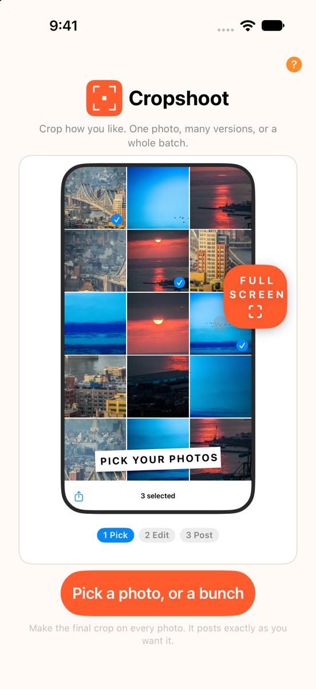

You decide the crop.
Crop how you like. One photo, many versions, or a whole batch. Every photo lands on a 4:5 canvas, ready for a carousel.
For iPhone
One pinch, every option
Pinch each photo on its own, from a tight crop to the whole photo to a wide white or black border.
Mixed batches
Horizontal and vertical photos together. Every slide keeps full height, in the order you choose.
Multiply
Make several versions of one photo: a detail, another subject, the whole scene.
Panorama
Split one wide photo into panels that line up as you swipe.
Originals untouched
Your photos stay as they are. Finished slides are saved as new images.
Stays on your phone
No account, no uploads, no tracking. Everything happens on your iPhone.
Make the final crop on every photo. It posts exactly as you want it.